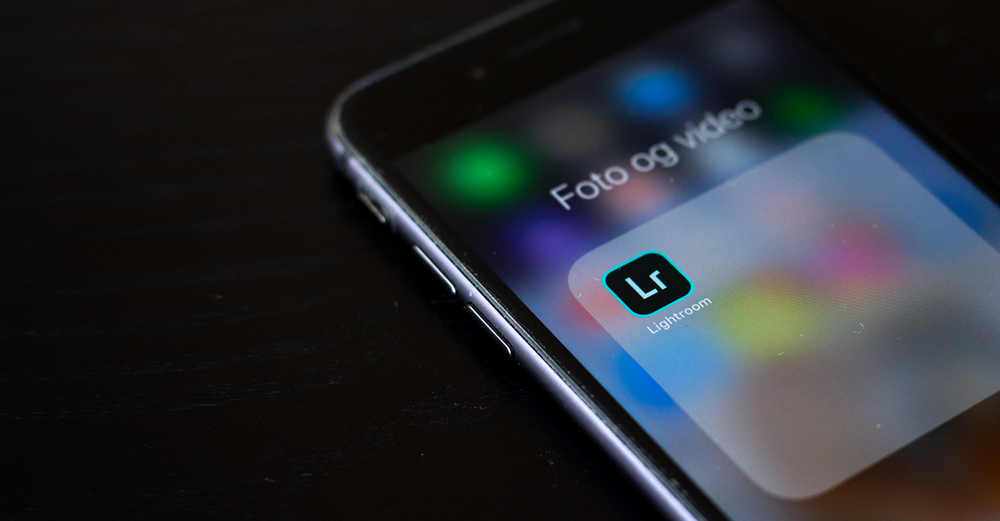
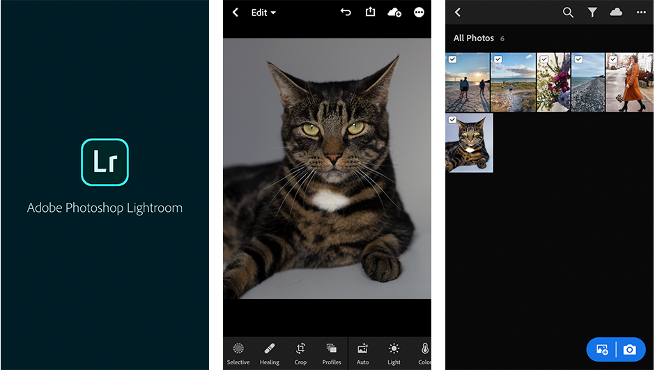
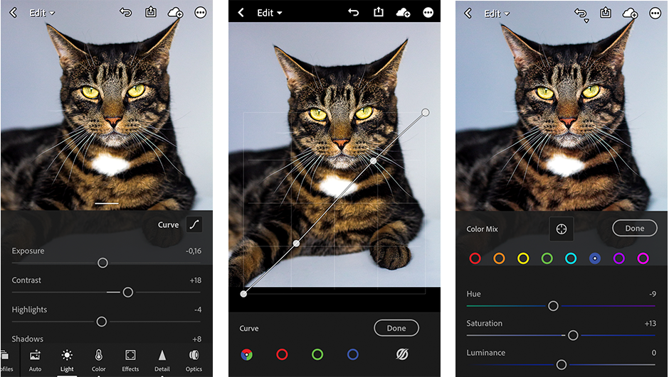
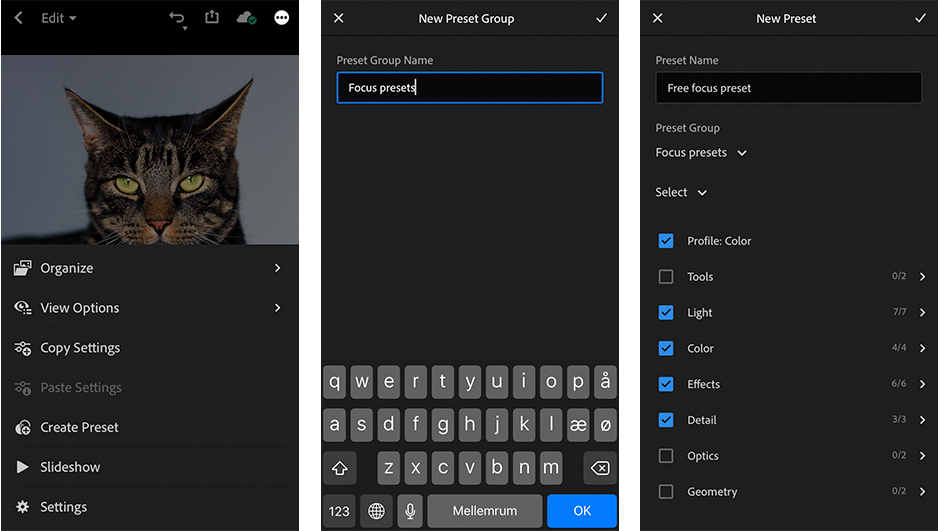
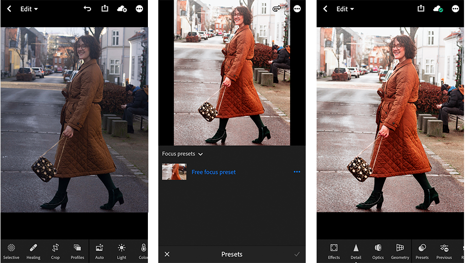
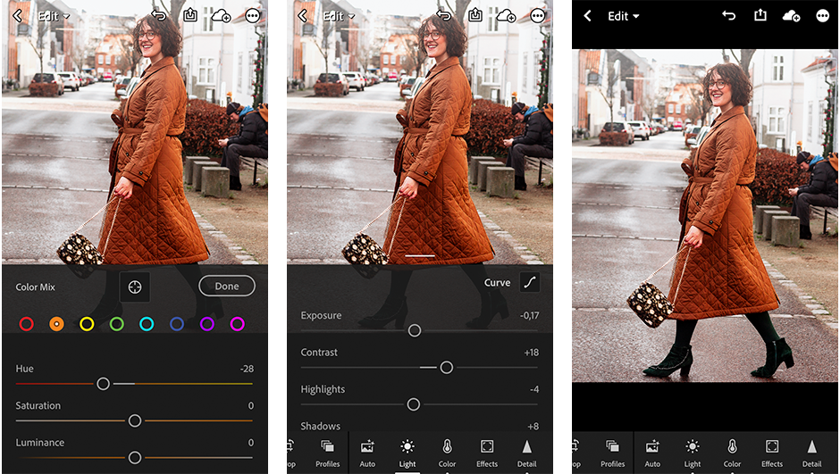

Presets er perfekt til et ensformigt look, til dit instagram feed eller en fotoserie. Samtidig gør det din redigering hurtigere og enklere.
Presets kan laves i utallige programmer, men Lightroom er klart den førende app. Som også bruges i denne tutorial til mobilen.
1. Åben lightroom mobile
Første step er at åbne Lightroom og det billede du vil tage udgangspunkt i for dit preset.

2. Anvend de ønskede indstillinger
Nu skal du anvende de ønskede indstillinger til dit preset. Det kan være alt fra f.eks. lys, curves, colormix og split toning.

3. Gem dit preset
Tryk på ikonet mere (tre prikker) i øverste højre hjørne. Derefter tryk create preset.

Nu skal du navngive dit preset. Kontroller at de indstillinger du vil inkludere, er afkrydset. Tryk derefter tjek øverst i højre hjørne
4. Brug dit nye preset
Vælg et billede, hvor du ønsker at bruge dit nye preset på.

Tryk på presets ikonet nederst i baren. Og vælg dernæst det ønskede preset og tryk tjek i nederst i venstre hjørne.
5. Nøglen er at tilpasse
Dine billeder har f.eks. sjældent samme belysning. Så for et bedre resultat, er nøglen at tilpasse dit preset til det enkelte billede. Det handler blot om ganske små justeringer.

I eksemplet ovenover er der skruet ned for de røde toner, så hun ikke bliver for rød i huden.